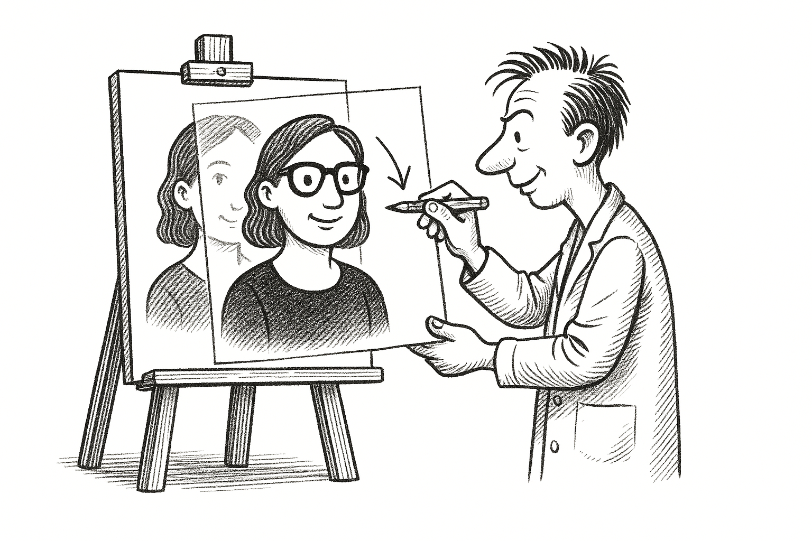

Qemu Overlay Images
Efficiently Managing Virtual Machines with QCOW2 Overlays

QCOW2 stands for Qemu Copy-On-Write version 2
Recently, while refactoring my kvmcli project (which I've migrated primarily to Golang to enhance the overall experience), I stumbled upon something really cool related to QCOW2.
I was already familiar with the basics of the QCOW2 image format, but you never truly appreciate certain features until you encounter a real-world problem yourself.
1 My Original Problem
I provision multiple VMs daily. To streamline this process, I initially created base images for Ubuntu and Rocky Linux using Packer, as these are the distributions I use most frequently.
However, each time I needed a new VM, I found myself doing the following:
- Making a complete copy of the base image.
- Booting up the new VM from this copied image.
This approach consumed considerable time and disk space—especially time, hence creating multiple VMs per day quickly becomes tedious.
2 The QCOW2 Overlay Image Solution
What I learned (and found genuinely exciting!) is that QCOW2 supports what's known as an overlay image. An overlay image acts as a tiny read-write layer on top of your existing base image.
Here's how it works:
- You keep your base image untouched.
- You create an overlay image that's essentially empty and references your base image.
- All new modifications (writes) go directly into this overlay image, while read operations fetch data from the base image as needed (just like the layered filesystem used in Docker).
This solution was perfect for my needs:
- Overlay images start extremely small (just about 100 KiB in my experience).
- Provisioning time is drastically reduced since I'm no longer copying large disk images.
- Disk space is significantly saved since only the differences from the base image are stored.
Discovering this was a fantastic productivity boost for my daily workflow
3 How to Create a QCOW2 Overlay Image
You must include backing_fmt=qcow2 when creating an overlay. Without it, the virtual machine may fail to boot.
Here's a simple example of creating an overlay image:
Suppose you have a base image called ubuntu-base.qcow2, and you want to create an overlay named ubuntu-overlay.qcow2:
qemu-img create -o backing_file=./ubuntu-base.qcow2,backing_fmt=qcow2 -f qcow2 ./ubuntu-overlay.qcow2
-o backing_file...,backing_fmt=qcow2:-o: Passes extra options.backing_file: Path to the base image.backing_fmt: Format of the base image (must beqcow2).
-f qcow2: Format of the new overlay image../ubuntu-overlay.qcow2: Path and name of the new overlay image.
4 Verifying the Overlay
After creating the overlay image, you can verify that it correctly references the base image using the following command:
qemu-img info ./ubuntu-overlay.qcow2
Look for output like this:
Notice that the actual disk size is "disk size: 107 MiB "
image: ubuntu-overlay.qcow2 file format: qcow2 virtual size: 25 GiB (26843545600 bytes) disk size: 107 MiB backing file: ./ubuntu-base.qcow2 backing file format: qcow2 ...
This confirms that:
- The overlay is in
qcow2format. - The
backing fileis correctly set toubuntu-base.qcow2. - The
backing file formatisqcow2.
If these fields are missing or incorrect, the virtual machine may not boot properly.
5 Overlay Image vs. Backing Image
Backing Image: Also called the base image, this is your original, untouched QCOW2 file. It's the read-only reference used by overlay images.
Overlay Image: This is the read-write layer created on top of the backing image. All modifications are stored here, leaving your backing image untouched.
It's important to remember that if your backing image gets moved or deleted, your overlay image becomes unusable since it depends directly on the backing image.
That's infortinate, but it's OK :)